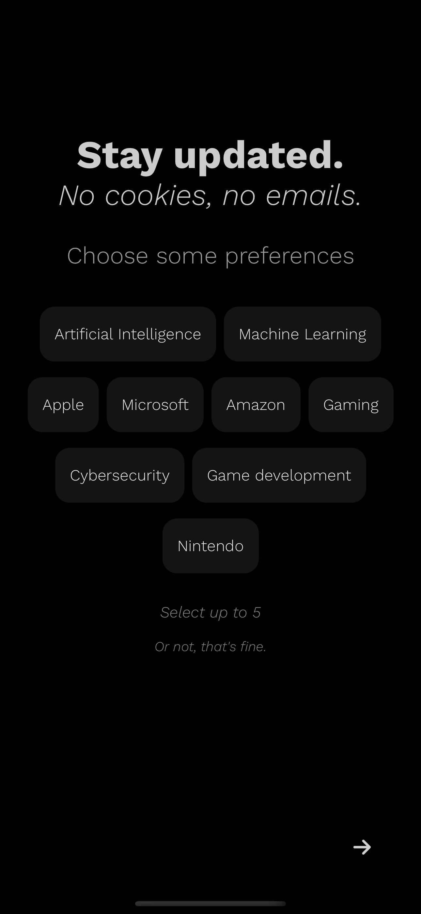

Projects
I'm actively building a React Native mobile application leveraging Expo, that allows users to read any kinds of tech news in a TLDR
format. At, tldr.tech you subscribe via email, I did this but ended up with a flooded inbox
and made it difficult to find important emails. Utiilzing my existing web application experience and my motivation to learn more about mobile/web application,
I wanted to build an app from the ground up.
In this short time, I've designed an entire backend leveraging PostgreSQL as my database, and created all of the
API endpoints for fetch data for initial processing, and responding to the client device when requesting data.
Tech stack: React, React Native, Expo, TypeScript, Node.js, Express.js, PostgreSQL


work
The Training Associates
July 2025 - Present
Junior Software Developer
Marlborough, MA
At The Training Associates, I work on TTA Connect, a platform connecting organizations with Learning & Development contractors. As a Junior Software Developer, I contribute to features across the full stack using React.js and C#/.NET.
My work spans both the customer-facing web application and internal tools. On the web side, I've built features that cut client-contractor hiring time by 20%, directly improving the user experience for thousands of active users. I've also developed WinForms desktop applications using Entity Framework and DevExpress that automate data workflows, reducing manual processing time by 10-20% for our business teams.
Working here has deepened my understanding of professional software development—from participating in code reviews with senior engineers to implementing backend features following CQRS and Clean Architecture patterns. I've learned to balance rapid feature delivery with code quality, ensuring production stability while shipping improvements that matter to users.
Tech stack: React.js, C#/.NET, ASP.NET, SQL Server, WinForms, Entity Framework, DevExpress, Azure, GitHub Actions
General Dynamics Mission Systems
September 2024 - May 2025
Software Engineering Intern | Full Stack
Dedham, MA

During my senior year at UMass, I worked part-time as a full stack engineer on an internal fork of OpenCVE—a vulnerability tracking platform used by security teams. I independently owned feature tickets from requirements through deployment, shipping 13 features to production.
The most challenging project was building a solution for air-gapped environments. Users in isolated networks couldn't pull live CVE data, so I architected a multi-stage system to export data from connected systems and process it locally. This involved rethinking how Celery workers handled data ingestion and ensuring seamless database synchronization—solving a critical pain point for users in highly secure environments.
I focused heavily on code quality, writing comprehensive unit tests with Pytest for every change and maintaining GitLab CI/CD pipelines. I also modernized Docker configurations and wrote documentation to improve the developer experience. This role taught me to navigate large Python codebases, work with asynchronous task queues, and think critically about system design trade-offs.
Tech stack: Python, Flask, SQLAlchemy, PostgreSQL, Jinja2, HTML/CSS, Redis, Celery, Docker, Pandas, NumPy, GitLab CI/CD, Pytest
General Dynamics Mission Systems
May 2024 - August 2024
Software Engineering Intern | DevOps
Dedham, MA

My first professional software engineering experience was a full-time summer internship working on the truMLS Open Platform Solution—a multilevel security system for defense applications. I focused on refactoring Ansible playbooks that automated service deployments.
The existing codebase had lots of duplicated logic and hardcoded values, making it difficult to maintain. I modularized the playbooks by extracting reusable components and parameterizing configurations, ultimately cutting the code in half and reducing memory usage during deployments. This made it significantly easier for customers and developers to configure their environments.
I also managed AWS EC2 instances running custom Red Hat Linux images, debugging networking and security configurations. Working in a remote Agile team, I participated in daily stand-ups and weekly demos, which built my confidence in communicating technical concepts. This internship shaped my understanding of CI/CD practices, infrastructure as code, and the broader software development lifecycle.
Tech stack: Ansible, Ansible Tower, YAML, Red Hat Linux, VMWare Workstation Pro, Python, GitLab CI/CD, AWS EC2
About

I recently graduated from UMass Amherst with a Bachelor of Science in Computer Engineering, earning a GPA of 3.63. My coursework focused on software development and engineering, including classes in computer architecture, operating systems, security, networking, and algorithms.
I'm a motivated and curious developer with a strong interest in building mobile and web applications across the full stack. During my senior year, I independently contributed to an internal fork of OpenCVE, designing and implementing full stack solutions to support internal users.
To continue sharpening my skills, I'm currently building a mobile application, using it as a learning platform to deepen my full stack expertise and explore modern development workflows.
I'm detail orientated, where I believe code quality and consistency is vital to the software development life cycle, always
looking for more efficient and effective solutions and take pride in clean code.
Tools & Languages: Python, C/C++, React Native, Expo, JavaScript, TypeScript, PostgreSQL, RISC-V, Wireshark, MATLAB, KiCad (PCB design), Excel
Contact